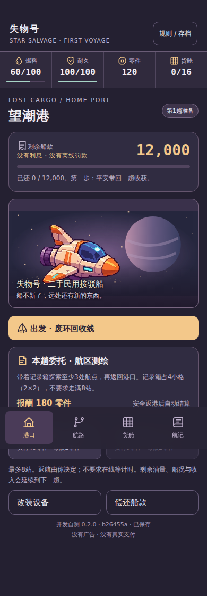
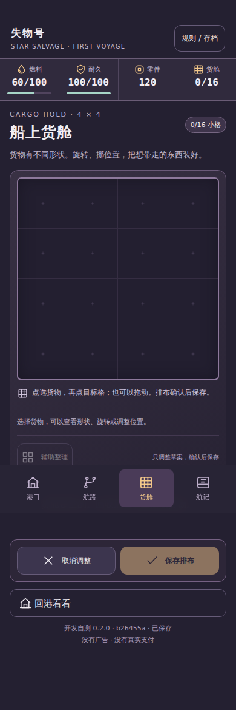
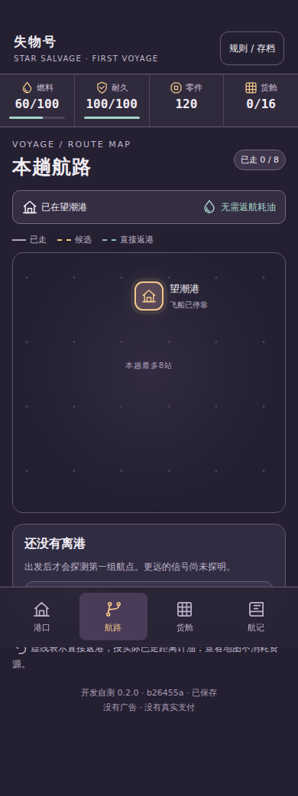

失物号：星海拾荒 · 第二轮开发自测拼图货舱，真实航路与统一图标
选航点，处理现场，把收获带回港口。货物现在有不同形状，可以旋转、拖动和重新排布；航路页显示实际经过的位置与下一步候选。
初始画面
以下只有初始港口、空货舱和港口地图，不展示未遇事件。



70项模型检查与600次脚本安全航行通过；同一固定包的24个网页场景在两种引擎和两种尺寸下共96次检查通过。真实手机、锁屏、文件面板、完整原画和趣味仍待验收。
开发证据（含剧透，建议试玩后查看）
完整版本与证据绑定 · 96次浏览器结果 · 两趟航行与QA录像清单 · 几何取舍的收益影响 · 跨层复核
继续Draft；未合并、未绑定正式主包、未提审、未正式发布。